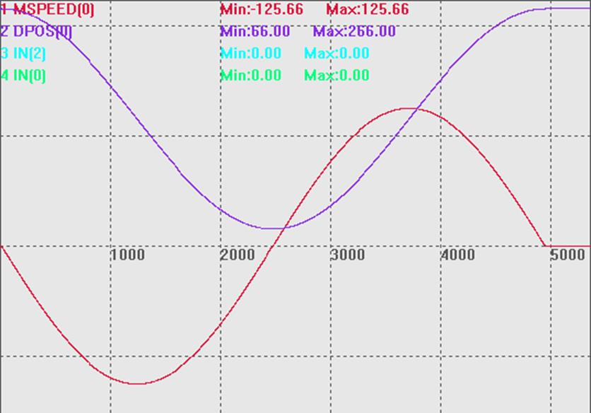

|
类型 |
特殊运动指令 |
|
描述 |
在一段时间内驱动电机运动设置的距离，带速度规划，可以指定结束速度，小段内速度会自动根据前面的速度与结束速度来自动规划, 尽可能连续。
一般是PC每个周期计算好对应的坐标，然后传给控制器。 支持使用BASE指定轴。 运动时的速度=(DIS/TICKS)*1000 units/s。 不要在极短时间运动大距离，脉冲频率会过高，电机堵转，可以分解成小段，重复发送。 |
|
语法 |
MOVE_PVTABS (ticks, dis1, sp1,dis2, sp2 …) ticks ：时间的伺服周期数。 dis1：第一个轴运动的绝对位置 sp1：第一个轴运动后的结束速度 dis2：第二个轴的运动绝对位置 sp2：第二个轴运动后的结束速度
SERVO_PERIOD为1000us的控制器1 TICKS为1ms(不同SERVO_PERIOD的TICKS时间不一样) |
|
适用控制器 |
通用 |
|
例子 |
例一 BASE(0) UNITS = 13107.2 DPOS = 0 SPEED=10 ACCEL=100 DECEL=100 MAX_SPEED=8000000
DIM timeadd DIM val1 DIM SPEEDval timeadd=0
DPOS =100*COS(2*PI*timeadd*0.2)+166 DELAY(1000) TRIGGER
WHILE TRUE
'周期=2π/|ω| 'x=A*COS（ωx+ψ）+C
'求导得斜率，即速度： 'v=-A*ω*SIN（ωx+ψ）
val1=100*COS(2*PI*timeadd*0.2)+166
SPEEDval=-100*2*PI*0.2*SIN(2*PI*timeadd*0.2)
?"val1="val1 ?"SPEEDval="SPEEDval MOVE_PVTABS(10,val1,SPEEDval) 'MOVE_PTABS(10,val1) timeadd=timeadd+0.01 if timeadd>(2*PI/ABS(2*PI*0.2)) THEN EXIT WHILE ENDIF WEND
MSPEED(0)无偏移，垂直刻度100 DPOS(0)偏移-50，垂直刻度100  |
|
相关指令 |